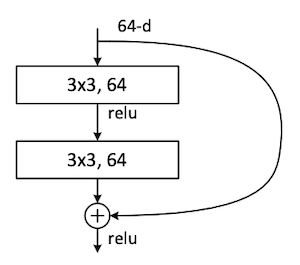

Projections#
Conv-2D#
torch.nn.Conv2d(in_channels, out_channels, kernel_size, stride=1, padding=0, dilation=1, groups=1, bias=True, padding_mode='zeros')
Depthwise Separable Convolution#
Depthwise Separable Convolution was proposed in [Cho17] in the continuation of the Inception network. It is the concatenation of a Depthwise Convolution (channel-wise convolution) followed by a Pointwise (1x1) convolution.
A normal convolution uses \(C_{out}\) kernels each of shape \((3,3,C_{in})\). It necessitates \(C_{out} \times (3 \times 3 \times C_{in})\) weights.
A DSC uses \(C_{in}\) kernels each of shape \((3,3,1)\), then \(C_{out}\) kernels of shape \((1,1,C_{in})\) A DSC will only necessitates \(C_{in} \times (3 \times 3 \times 1)\) and \(C_{in} \times C_{out}\) weights. The number of multiplications is also largely reduced.
Because of this, it is largely used in model for IoT such as MobileNet [HZC+17].
image source: https://ieeexplore.ieee.org/stamp/stamp.jsp?tp=&arnumber=9175497
# Code: https://github.com/seungjunlee96/Depthwise-Separable-Convolution_Pytorch/blob/master/DepthwiseSeparableConvolution/DepthwiseSeparableConvolution.py
class depthwise_separable_conv(nn.Module):
def __init__(self, nin, kernels_per_layer, nout, kernel_size=3, padding=1):
super(depthwise_separable_conv, self).__init__()
self.depthwise = nn.Conv2d(nin, nin * kernels_per_layer, kernel_size=kernel_size, padding=padding, groups=nin)
self.pointwise = nn.Conv2d(nin * kernels_per_layer, nout, kernel_size=1)
def forward(self, x):
out = self.depthwise(x)
out = self.pointwise(out)
return out
model = depthwise_separable_conv(16, 1, 32)
X = torch.randn(2,16,23,23)
model(X).size()
ResNet#
ResNet has been proposed by [HZRS16] in the framework of imae recognition. A ResNet is made of a large number of blocks each containing a residual connection (skip-connection). The later allows to bypass blocks during forward, and backward easely during training hence allows constructing very deep models (152 in the original papers). We are interested here in the two building blocks of ResNet:
The building block#
a first 2D-Convolution
a ReLU
a second 2D-Convolution
the residual connection \(\mathcal{F}(x)+x\)
a ReLU

image source: https://arxiv.org/pdf/1512.03385
# https://www.digitalocean.com/community/tutorials/writing-resnet-from-scratch-in-pytorch
class ResidualBlock(nn.Module):
def __init__(self, in_channels, out_channels, kernel_size = 3, stride = 1):
super(ResidualBlock, self).__init__()
self.conv1 = nn.Sequential(
nn.Conv2d(in_channels, out_channels, kernel_size = kernel_size, stride = stride, padding = 'same'),
nn.BatchNorm2d(out_channels),
nn.ReLU())
self.conv2 = nn.Sequential(
nn.Conv2d(out_channels, out_channels, kernel_size = kernel_size, stride = 1, padding = 'same'),
nn.BatchNorm2d(out_channels))
self.downsample = False
if in_channels != out_channels:
self.downsample = True
self.conv_ds = nn.Conv2d(in_channels, out_channels, kernel_size = 1, stride = 1, padding = 'same')
self.relu = nn.ReLU()
self.out_channels = out_channels
def forward(self, x):
residual = x
out = self.conv1(x)
out = self.conv2(out)
if self.downsample: residual = self.conv_ds(x)
out += residual
out = self.relu(out)
return out
The “bottleneck” building block#
It is a stack of 3 layers instead of 2 The three layers are 1×1, 3×3, and 1×1 convolutions, where the 1×1 layers are responsible for reducing and then increasing (restoring) dimensions, leaving the 3×3 layer a bottleneck with smaller input/output dimensions.
# https://github.com/pytorch/vision/blob/main/torchvision/models/resnet.py
class Bottleneck(nn.Module):
def __init__(self,
inplanes: int,
planes: int,
stride: int = 1,
downsample: Optional[nn.Module] = None,
groups: int = 1,
base_width: int = 64,
dilation: int = 1,
norm_layer: Optional[Callable[..., nn.Module]] = None,
) -> None:
super().__init__()
if norm_layer is None: norm_layer = nn.BatchNorm2d
width = int(planes * (base_width / 64.0)) * groups
self.conv1 = conv1x1(inplanes, width)
self.bn1 = norm_layer(width)
self.conv2 = conv3x3(width, width, stride, groups, dilation)
self.bn2 = norm_layer(width)
self.conv3 = conv1x1(width, planes * self.expansion)
self.bn3 = norm_layer(planes * self.expansion)
self.relu = nn.ReLU(inplace=True)
self.downsample = downsample
self.stride = stride
def forward(self, x: Tensor) -> Tensor:
identity = x
out = self.conv1(x)
out = self.bn1(out)
out = self.relu(out)
out = self.conv2(out)
out = self.bn2(out)
out = self.relu(out)
out = self.conv3(out)
out = self.bn3(out)
if self.downsample is not None:
identity = self.downsample(x)
out += identity
out = self.relu(out)
return out
ConvNeXt#
ConvNeXT has been proposed in “A ConvNet for the 2020s” [LMW+22] with the goal of modernizing ResNet architecture to remains competitive with Vision Transformers (ViTs). It especially bases its design on the Swin Transformers:
larger kernel size (kernels are \((7 \times 7)\)), as in Transfomer (Transfomer has a non-local self-attention, which enables each layer to have a global receptive field)
ResNeXt-ify: instead of grouped convolution use dephtwise convolution
inverted bottleneck (from 96 channels to 384 then back to 96), as in Transformer (the hidden dimension of the MLP block is four times wider than the input dimension)
various layer-wise micro designs (use of layer normalization)
Replacing ReLU with GELU (Gaussian Error Linear Unit)
Transfomer has fewer activation functions (only one activation function present in the MLP block) In [LMW+22], it has been shown to achieve better performances than Transformer-based architecture.
image source: https://arxiv.org/pdf/2201.03545
# ConvNeXt CODE: https://github.com/facebookresearch/ConvNeXt/blob/main/models/convnext.py
class ConvNeXtBlock(nn.Module):
def __init__(self, in_channels, out_channels, kernel_size=7, drop_path=0.0):
super(ConvNeXtBlock, self).__init__()
# 1. Depthwise convolution (spatial convolution with large kernel)
self.dwconv = nn.Conv2d(in_channels, in_channels, kernel_size=kernel_size, padding=kernel_size // 2, groups=in_channels)
# 2. Layer normalization applied across channels
self.norm = nn.LayerNorm(in_channels, eps=1e-6) # LayerNorm is applied after permuting to (B, C, H, W)
# 3. Pointwise convolution to project to higher dimensions (expanding and compressing channels)
self.pwconv1 = nn.Linear(in_channels, 4 * in_channels) # expand channels by 4x
self.act = nn.GELU() # GELU activation
self.pwconv2 = nn.Linear(4 * in_channels, out_channels) # project back to original channels
# 4. Stochastic depth (optional) for better regularization
self.drop_path = nn.Identity() if drop_path == 0 else StochasticDepth(drop_path)
def forward(self, x):
# Input: (B, C, H, W)
residual = x
# 1. Depthwise convolution
x = self.dwconv(x)
# 2. LayerNorm after permute to (B, H, W, C)
x = x.permute(0, 2, 3, 1) # (B, C, H, W) -> (B, H, W, C)
x = self.norm(x)
# 3. Pointwise convolutions + GELU
x = self.pwconv1(x)
x = self.act(x)
x = self.pwconv2(x)
# 4. Drop path (if applicable) and residual connection
x = x.permute(0, 3, 1, 2) # (B, H, W, C) -> (B, C, H, W)
x = self.drop_path(x) + residual # Add residual connection
return x
class StochasticDepth(nn.Module):
"""Drop paths (stochastic depth) per sample (when applied in the main path of residual blocks)."""
...